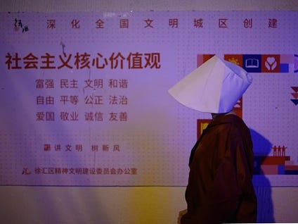
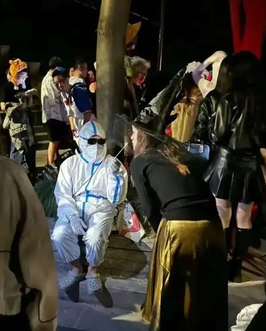
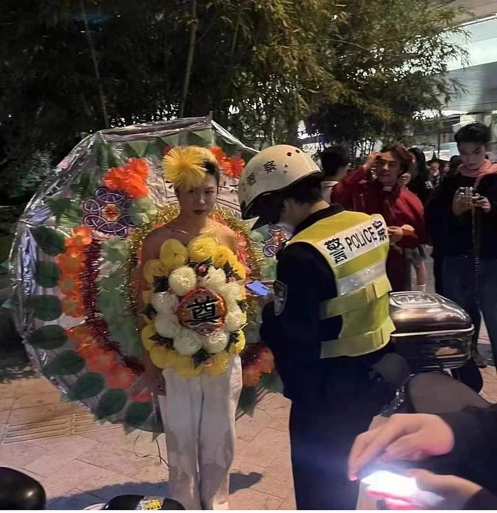
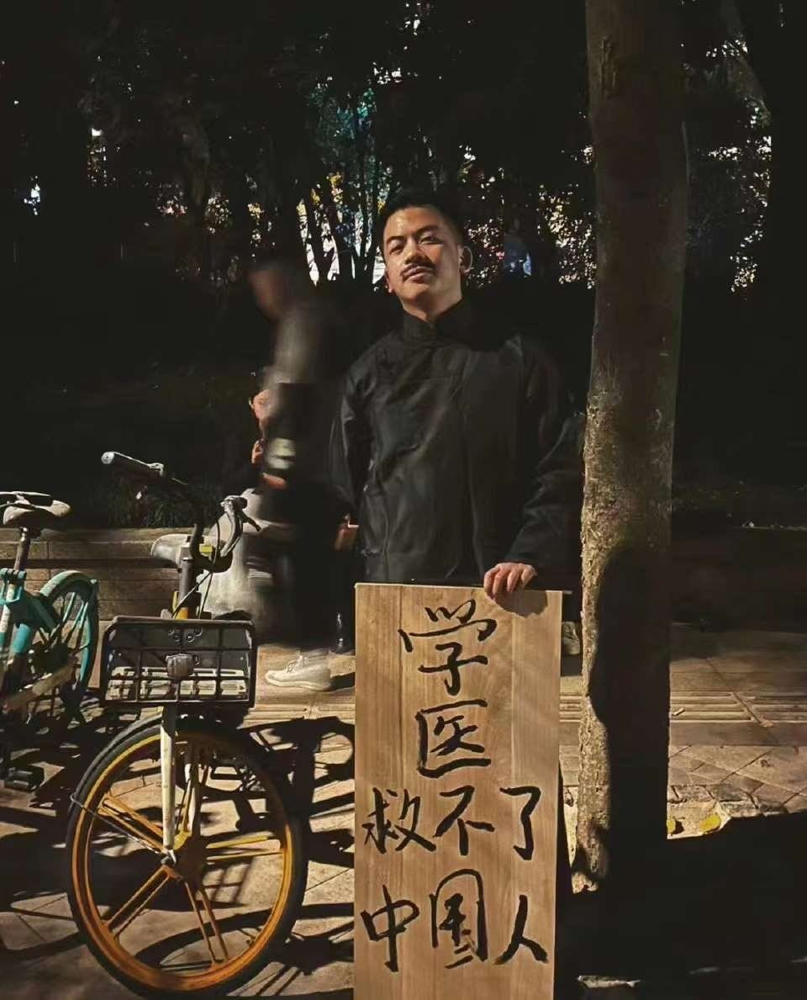

从“上海白纸”到“上海万圣”，那些在创伤后继续走上街头的年轻人 - WOMEN我们
“哪怕乌鲁木齐中路路牌被拆走，悼念鲜花都被扫走，留一个废墟在那里，就很有力量。这件事不可能被压下去，反而在已经有想法的人们心中打上一层烙印，更想去关注和表达。”

撰文 里予
编辑 炎炎
已有多年传统的上海万圣变装活动，为何会在今年火爆出圈？线下年轻人最活跃的集体公共表达，又为何出现在上海？
万圣节过去两周后，带着这样的问题，我间接找到五位上海万圣节参与者讲述此行经历见闻。随着对话的深入，几乎每个人都搁置了恐惧，谈起去年现场参与“上海白 纸运动”的经过（仅有一位因出差“遗憾错过”），其中有两位当场被捕，最长的在派出所留置36小时。虽然心理有所预期，参与“上海白纸”和“上海万圣”的 两波年轻人或有重叠，我仍然为我约访的双重参与者的“浓度”感到意外。正如外界对“白纸运动”前线参与群体的分析提及的，ta们不是女权主义者就是性少 数。
在“后疫情”的近一年里，对于“白纸运动”，ta们或选择回避和埋藏这份记忆，或坚持言说和公共表达、在小社群中抱团取暖，但相似的 是，万圣节成了ta们又一个共同“抓住”的出口-–—当日常工作无法再为年轻人提供普遍的价值感，参与公共生活的微小的“反抗精神”，彰显个体身份认同，让 ta们真正感到生活在上海这座以“小资”和消费文化主导的城市的意义和希望，而这也正是连接“上海万圣”和“上海白纸”的内在延续性的内核。
作为“白纸”的万圣节
随意的“拉方舱”、封楼、调查行程轨迹带来的恐慌，从27人遇难的贵州转运大巴车祸，到广州女子在方舱上吊身亡，再到因封控导致10人遇难的乌鲁木齐居民楼 火灾……去年此时，乌云几乎被政治抑郁吞没。11月27日白天，她将一束白花放在了乌鲁木齐中路路牌下，插着的白纸上写着改写自香港乐队My Little Airport的歌词：“我知已走到尽头，但请你请你留低，留低一起做见证”。
10月29日周日深夜，乌云下班来到上海成都南路一带。看着眼前摩肩接踵的“万圣变装”人潮，与两端路口把守的警察谨慎地保持距离，她仿佛又回到了去年11月27日上海乌鲁木齐中路的街头。两地不过相隔几公里。她内心隐约期待，会在人群中看到“白纸”相关的变装表达，却遗憾落空。
直到回家后，她才在网上看到那张照片：一个女孩身穿黑衣，上面贴满了一张张白纸。“她或许在用自己的方式，提醒大家不要忘记去年冬天发生的事情。我想，这不只是因为勇敢，而是在这样的行动中，我们才能更热烈、更鲜活地感知到自身的存在。”
手举A4白纸的动作，最早可以追溯到一位南京传媒学院的女生，随后被越来越多的人自发沿用，逐渐成为1989年后中国规模最大的社会运动的象征。这场被称作“白纸运动”的集体抗议，因纪念“11.24乌鲁木齐火灾”而起，以反对疫情“清零封控”政策为最大公约数，在那个周末迅速点燃了中国数个一二线城市， 又在短短几天内被各地警方的高压逮捕和巡查行动扑灭。
“白纸一方面是空白，象征了我们过去在封锁、口罩、核酸、各种码中流逝、‘清零'的三 年时间，也代表了我们想说但不能说的一切、尽在不言中，”乌云说道，“另一方面，因为它的空白，白纸可以被涂抹上任何色彩、写任何文字、被折叠成任何形状……我觉得它也意味着我们在这里的公共表达拥有无限、多样的可能形式。”
某种程度上，今年的上海万圣节正像这样一张“白纸”，邀请人们尽情在上面挥洒创意。“大家似乎都意识到了，这是这里为数不多的能够光明正大地上街、在街头自由表达的机会。”
这里有“百变大咖秀”般的名人名角模仿，也有美女和肌肉男的动漫cosplay；有“建筑生”、“医学生”、“文科生”、乃至“乙方”扎堆吐槽就业和职场现状，也有不少讽刺时政的异见，比如：“学医救不了中国人”的鲁迅；抱着“三胎”娃娃的女性；在“社会主义核心价值观”标语前接受路人“Praise be”问候的故事里的“使女”；2070年“光荣退休”的“老人”；更少不了去年上海万圣便已“霸屏”、今年继续“还魂”的各类身着“大白服”的防疫人 员、巨型核酸棉签、“套头”行程码等。
在这个稍纵即逝的时空里，每个人仿佛都充分拥抱着自由的“假象”，将那根心照不宣的“红线”向前推移。通过社交媒体的传播，更多人看到了行走的大号监控探头、挂着“打倒程蝶衣（电影《霸王别姬》经典角色）”牌子游街的京剧名伶，因形似习近平而早已在公 共场所“敏感化”的小熊维尼，当然还有“白纸女孩”……很快它们又在“墙内”网络上消失得无影无踪。
前总理李克强在那个周五突发心脏病逝世，更为这场与死亡相关的节庆增添了几分戏剧性。无论是人形大花圈，还是“我在上海很想你死”路牌，都偶然与民间“挺李反习”的悼念情绪暗合。
花圈扮演者的一位朋友告诉我，当事人的花圈在现场被没收，随后被带走问话，但事实上他很早就置办好了这身“盛装”，与去年扮演纸钱相呼应。当天李克强逝世新 闻传来，他就发朋友圈吐槽，这身万圣装扮可能不敢穿了，或许是为了不给自己留遗憾，他还是去了。有网友评论道，“不带走还不会让人往那个方向想，真就苏联 笑话了。”
但乌云还是感觉，在欢乐、戏谑的氛围下，有愤怒和讥讽在暗涌和流转，指向这片土地上发生过与正发生着的种种荒诞，与无处宣泄的冤屈。这和“白纸”背后的群体情绪同源。有一刻，她清晰而强烈地意识到，“身边奇装异服的每一个人，都不是正在参加这次万圣节活动的变装‘鬼魂'，而是活生 生的、共同经历了混乱、失序、创伤、疼痛的疫情三年的人们”，“大家都很需要疗愈，也都有很多想要说的、想要表达的东西。”

疫情中的“存在危机”
“这 一切都是有关联的。” 包冷从大学生到打工人的身份转换，恰与疫情同步，原本热爱旅游和新奇体验的他，被迫过上了每天上班、通勤的单一生活。去年刚从北京裸辞来到上海，租好房 子，他就迎面撞上封城，接连网络面试的压力、男友的不理解和摩擦，让他十分崩溃。两个月后解封，两人和平分手。今年3月，包冷开始出现右眼视力模糊，医生 查不出任何原因；6月，骑车意外被撞，身体疼痛一直难以缓解；8月，他看了心理科医生，确认是轻到中度焦虑症引起的躯体反应。
有一天，他的脑子里冒出这个念头：“为什么要飞速抵达公司”，决定多花15分钟走路上班，走着走着便哭了一路。
服药一周后，包冷便自行断药。对他来说，看演唱会才是更好的“药方”。今年他已经“疯狂”看了15场，台湾流行歌手几乎一个不落，比大学的巅峰期还多。他笑称，9月最低落时，有过“不想活了”的想法，但一转念就是“还有买了票的演唱会没看”。
对包冷来说，万圣节就是又一次“释放”的机会。并且，有机会超越“异性恋消费主义”框架，成为肆意解构主流文化和性别身份的狂欢。
那个周末，临近项目出差，他加了整整两天班，但还是在周一凌晨2点出现在上海万圣街头。抱着“在外面就要有自己的表达”的初衷，包冷紧急定制了一件“打工人”T恤，吐槽节假日调休政策。虽然刚刚收获70多赞就在“小红书”上被“限流”，但他还是很满意能说出自己的心声，“这次的表达，让我突然意识到，我可 以选择不过无聊的人生。”
和包冷同样经历了“存在危机”的还有吉吉。2021年夏天大学毕业后，吉吉gap了四个月，从建筑专业转向艺术摄影领域。那时，上海以其繁华和高级的艺术品味吸引了他，只身来到这座没有一个朋友的陌生城市。
封城期间，除了爸妈，几乎没有人问候他在上海的情况；很多日子里，他的微信可以一天都没有任何声响。他感觉自己正被世界遗弃，难以回避思考关于世界的意义、自己的人生道路何去何从等“终极问题”。
解封后，他立马去新疆骑行了7天，经历了暴晒和极端天气，没迎来什么“灵魂的洗涤”，回到上海后反而更加低沉。直到去年10月底的万圣节，“算是一个小小的激发，见识到更多‘个体'的人，而不是群体里的人，群体只会淹没个体。”吉吉兴奋地回忆，当晚他玩到凌晨近三点，第一次感受到上海真正的魅力，这座城市 的“内核”在他的眼前打开了。
“所有没听过的活法、故事、可能性，藏在巨大的财富之下更多元化和包容性的东西，才是吸引我的地方。”吉吉当即发誓，2023年一定要参与上海万圣节，成为变装队伍中的一员。
他后来“悟出来”的答案，可以凝练为一句话：“我不在乎”-–—嬉皮士的人生信条。“当我把‘不在乎自己的生命'放在这里，世界上的一切事情都不再是事情，想通这个以后，我比以往更强大，就像双雪涛的小说《聋哑时代》结尾写的，‘我应该再也不会被打败了'。”
一个“不在乎”的人，拒绝将疫情视作“人生转折点”，“对大多数人来说，经历一些苦难，虚幻的东西才分崩离析，对我而言不是。”吉吉说。

一个“幽灵”
但吉吉不能“不在乎”公共表达的“雷区”。他本来也想cos巨大的男性性器，但知道去年的扮演者被当场带走，便作罢了；他转念想或许可以cos阴道，但这很可能引来非议。最后他选了一个年轻人喜闻乐见的形象：粪便，与朋友扮演的卷纸组成cp，自认成功在一众粪便coser中“艳压群芳”。点睛之笔是一个写有“世界像粪”字样的布袋，他还特意挂了一个在泰国买的木制小鸡巴口哨。将一切似乎难以启齿的公开化，是他对这个世界“去魅”的方式。
后来他注意到，今年有女生cos男性性器，“网上吵翻天了，女的说她媚男，男的说她低俗，两边都很蠢。”在他看来，如今越来越重视性教育，公开谈论和扮演性器官，是在反抗大众文化中不合理的性禁忌，“没什么不好出现的”。
秋秋带着破除“月经羞耻”的主题参与今年上海万圣节。她提前两周就开始策划着装，有天晚上一直想到失眠。她不想只是单纯打扮成可爱漂亮的“花瓶”，而是希望 这是属于自己的“有意义的表达”。“为什么万圣节一定要搞血来装扮呢？月经不也是血？”当这个逻辑链路打开后，她确定要用带血的卫生巾作为装扮的一部分， 事后也为这一刻深感庆幸，“这就是我想要做的事情。”在万圣现场，她不断收获女孩们会心的目光和赞美，也努力向好奇的男生展开科普。
在她的初中记忆里，看到女老师口袋里的鼓包，男同学会下意识猜测是卫生巾而捂嘴偷笑，完全放下了原本对老师的敬畏。等到上了高中和大学，她愈发坚持在日常对话中用学名“月经”而非“姨妈”、“例假”等代称，有意识地影响身边的每位朋友。自2014年关注网上的女权主义博主以来，她越来越多地为女性议题发声。
之前的疫情三年，秋秋也有在上海参与小规模的万圣活动，她明显感到“今年风气和往年不一样”。
乌云说，如果没有任何限制，她想象自己的万圣cosplay show会是这样的：她是一个被铁链锁住脖颈、手脚的女人，朋友“粗暴”地抓住她，往她身上贴上许多写了红字的白纸。“精障女性被拐卖结婚生了八个孩子”、“被拐卖女性的婚姻被司法承认其合法性”、“荡妇”、“婊子”、“性骚扰都是女的自己不检点”……她被铁链牵着走一段路后停下，将身上的一张张纸扯下来，用力撕掉；然后她试图解开或挣脱铁链的束缚，却发现怎么样努力都无济于事。
现实是，她被繁重的工作和长久的抑郁症抽走了绝大部分精力，她更害怕继“白纸被捕”之后再次遭遇来自警察的暴力。她想起2015年初被短暂关押的“女权五姐妹”。走上街头cosplay，曾是青年女权行动派标志性的抗争行动，留下的经典形象有“被家暴的带血新娘”等，直到去年还有女权主义者在香港做了类似表达。
严格意义上来说，将离的万圣变装秀是在一家上海的俱乐部完成的，并不是在群众包围的街头，即更广为人知的巨鹿路found158下沉广场及其周边马路。在他看来，“158”那里的装扮“没啥内涵”，Club平时举办的活动要更为多元。在这里活跃的酷儿朋友总是被保护得很好，装扮也更出格，足以“秒杀普通人一大截”，“万圣节上所谓的'奇装异服'其实是我们群体的日常，只是落实到每个人的话，政治性表达会少一点。”
今年万圣节，应Club主题的设定，他灵机一动，决定做一个和社交媒体平台内容限制相关的造型，因为这就是游荡在我们日常生活中的“幽灵”。他没有刻意想到，这是一个“政治化的表达”，“它其实处于中间值，半政治不政治，你不能界定它，又有很大被曲解的空间，这种东西才是好玩的。”
吉吉则把大街上的路段变成了他期待已久的第一次”Drag Queen Runway（T台）。终点正是警察拉起的警戒线前，外面拦着几百号观众。他拖着巨大的粪便外壳，悬浮般走过，摆出ending pose（结束姿势）后来了一句口号“世界像粪”，转身谢幕。
在万圣现场，他夸张地“闻到”90%男性参与者的气息都是gay，“网上有句话说，‘母0'撑起了上海万圣节的半边天。”吉吉并不愿意被归类于群体中，他认为“个体存于群体中往往充当被裹挟的人质”，而他不愿成为任何的人质。但他仍十分享受上海万圣节营造出的这个短暂的“乌托邦”，从中感到一种难得的群体归 属感。
“原来还有这么一群伙伴在，哪怕不认识，也像是上辈子认识的感觉，每个人都放下戒备，人与人的联结、信任又回来了。”吉吉说，“就是因为这种联结很短暂，很难被带到日常生活，才那么珍贵和让人珍惜。”
将离对今年上海万圣节的观感却是“整体很平淡”，“有种小红书上的网络流行梗像‘平行世界'一样涌入了你的生活。可能平时大家在上海，或者至少我的个人生活，已经是狂欢了，所以万圣节除了人多也没啥特别的。”他笑称，上海万圣节的火爆，只是印证了这句话，“直男们也想有自己的骄傲月”。

“白纸”时期的“爱情”和“记忆容器”
和乌云一样，将离也因为“白纸被捕”经历了半年以上的创伤，只要看到警车听到鸣笛都会涌起一阵害怕。原本他也没有预料到后挫力有这么久。今年中旬的一天，他在家里听到社区民警敲门，第一反应仍是给朋友们疯狂发微信报告。啼笑皆非的是，对方其实只是来宣传反诈信息。
“我很庆幸我去了（白纸现场），但我也希望我不用再去。”将离说，11月27日凌晨，他和朋友们喝完酒，听说乌鲁木齐中路的消息，犹豫了一下还是去了。他在现场并未做任何表达，单纯围观，可能是因为站的位置靠前，就被警察突然抓走。他度过了难熬的数十个小时，吃喝上厕所都不方便，睡觉也睡不好，逐渐感到恐惧和 精神崩溃。
“庆幸”是潜意识中的本能印象，他很难具体展开诠释，便用玩笑来化解，“也许是无意之间做出了可以在30年后喝酒时吹牛的事情的'庆幸'？我也不知道这庆幸是哪来的，它让我可能失去的，比带给我的要多，工作、自由、心理健康、肉体感受……”
“我或许之前勇敢过，现在只想心安理得地当个懦夫，因为我还没有强大到那个地步。”将离说。释放后他几乎不会和人主动谈起“白纸”，现在他也不太情愿回忆当天的现场细节。记忆中零星的画面是，有男生割破手指在电线杆上写字，具体写的什么忘了，而之前已经留下的字迹写着：“冒着敌人的炮火，前进前进前进进， 11.27”。
令他感触最深的反而是，路口便利店大叔给大家送来矿泉水喝。在那一刻，他惊讶于上海人竟打破了平时严密的“边界感”，产生某种同道情谊。
乌云形容，在“白纸运动”发生后，乌鲁木齐中路那片区域给她带来的感受，类似台湾“2·28”事件开启的白色恐怖；发生抗议的那两个夜晚，上海街头几乎可以 用“刀光剑影”、风声鹤唳来形容。除了当晚和几个女生一起当面举着白纸与警察对峙，她更愿意珍藏和分享的也是那些暖心的记忆：
11月27日深夜，她想把一位警察正抓捕的女生“抢救”下来，结果却一起被带上了小巴车。在等待转运的过程中，乌云趁看守的警察不注意，把右手贴紧膝盖侧边，隔着过道 向那位女孩两次偷偷竖起大拇指。她微微点头示意，和她对视而笑，“那是我和她心照不宣的时刻，无需任何语言，她便明白了一切。”那里有对勇气的赞赏， 有“不要害怕”的互相抚慰。
一周后，一位博主记录的“真实爱情故事”在社交媒体上广泛流传：在其举办的读书会上，两个女孩相识，开始经常 dating（约会），但尚未表达心意确定关系。而后，她们相约去了乌鲁木齐中路，其中一个女孩因拿出手机记录而被警察抓上大巴，另一个女孩为了保护她， 也紧随其后被推搡上车。在一车惊恐无助的年轻人中，她看着她的眼睛说，“我们在一起吧？”她也看着她，坚定地点点头说：好。随后，她们不顾旁人的注视，忘情地拥吻。
博主写到，警察发现了“这里有一对同性恋”，车子开到一个公园后，所有人被驱逐下车，随意审问几句后，就都被放走了。没有人能证实这个另类“爱情神话”的真实性，尤其是这个“大团圆”的结局更是令人生疑。但许许多多“上海白纸”的参与者和同情者们，都情愿相信这是真的。因为它代表着人类所能拥有的最好的东西-–—爱，理想，希望。
包冷没有这个幸运。当时，他也是和dating对象一起去的乌鲁木齐中路，反而感到“孤单”。他内心想要更勇敢地站在前线，但对方更为保守和“软弱”，呆了半小时左右就觉得不安全，喊他一起退出了人群。他没有为提前离开感到遗憾，“时间长短 不重要，be there（曾经在场）就很棒”。
不过，他还是忍不住想，“要是后期还有这样的行动，我一定要跟最爱的人一起参加，或者说能参加这样运动的人，才能是我爱的人。”回去后，意识到两人观念不合，包冷慢慢与他疏远了联系。
在现场，他看到许多LGBT“同类”肩并肩手牵手，“真的很受鼓舞，就觉得虽然是政治运动，但把我们不能公开表达的东西也一起表达了，不想你说什么就是什么，不是你说不存在我们就不存在。”
“能和同立场的人真实站在一起，让上面的人听到，我们要有正常的生活，不管是不是真地产生了社会影响，但至少对我自己很有意义。”包冷说。
三年前，他正在香港读书，目睹了“反送中运动”，虽然也会在街头骚乱中真实地感到害怕，他还是在国内社交媒体上努力发声，呼吁网友不要只看到“过激”现象，而是要将心比心地理解别人，是否受到了不公平待遇。可惜得到的反馈都是无脑谩骂。
如果不是出差离开上海，秋秋相信“白纸运动”时自己也会去到现场。“哪怕乌鲁木齐中路路牌被拆走，悼念鲜花都被扫走，留一个废墟在那里，就很有力量。这件事不可能被压下去，反而在已经有想法的人们心中打上一层烙印，更想去关注和表达。尤其在上海这个地方，简单地拆路牌、撤舆论，不是正确的做法，只会激起更强 的反叛的声音和力量。”
在所有受访者中，吉吉在现场呆了三四个小时，直到凌晨人群基本被驱散，他说，“我要在场，真实记录下来这一刻。某种 程度上，我想成为这段历史的‘容器'，让未来的人知道真实发生的样子，不能被轻易篡改，因为每个人都有获取真相的权利。我把它放在记忆的最深处，不会想 起，也不会忘记。”
随着“上海白纸”一周年的时点临近，海外各地出现诸多纪念活动通告，但被问及自己会如何纪念，乌云笑笑说，接受采访可能 算是唯一的纪念方式。她注意到，连日来上海街头增加了许多警力，她自己也接到警察电话，警告当天不能去乌鲁木齐中路，一旦去了被路上的摄像探头拍到，他们 可能会直接上门把她带走。
警察比普通市民更积极地在“纪念白纸”，乌云和朋友们不无讽刺地笑谈。她还听说，去年“上海白纸”的被捕者夏巢川 近期再次被上海警察以“寻衅滋事”名义上门带走调查，现正羁押于看守所，律师多次申请会见被拒，至今案件详情不明，尚不清楚是否和上海警方对万圣节游行“秋后算账”有关。这个消息让她震惊和担忧，“不知道她目前处境如何，警方是怎么定性的。”
据推特用户“李老师不是你老师”发布的一篇小红书笔记截图显示，一位上海网友自称因转发几张万圣节照片被警察约做笔录，警察称照片中所有当事人基本都被约谈过了。原帖目前无法在小红书上搜索查看。
在将离看来，“上海万圣”和“上海白纸”完全是两件不同的事，“万圣节大家自发聚集，目的就是想开心，也没想纪念什么”，直到出现“熟悉的配方熟悉的味道”：警察维稳约谈、社交媒体平台相关内容的限流或消失……“从官方的角度觉得这是有联系的”。
将离觉得，“我在上海很想你死”这样的标语，其实很符合上海年轻人的心情，“就是有种随便活活的美感，很多东西你没有办法，大家平时已经够累的了，也没有让自己生活状态变好，没有人告诉你要怎么做。”
明年上海万圣游行的传统还能继续吗？许多人心里打上了问号。包冷非常肯定，无论如何，他已经计划好“以后每年都要做一次表达”，“就像去年白纸和今年万圣”。他正在考虑出国读心理学学位，希望帮助更多经济下行的社会中有心理困扰的人，如果明年不在上海，“可能真的得去别的国家参加骄傲游行。”
秋秋对此也抱有期待，她为双性恋者在性少数群体中的污名而遗憾，“大环境本来就在收缩，为什么群体内部还要作分化？”大学时，她做过职业模拟沙盘，结论是她适合成为在性别议题上发声和推动者，虽然毕业后妥协地进入了企业，但她始终相信，在未来的某个人生节点，她还会去做相关的事，“这（次万圣）肯定不是我最 后一次表达。”秋秋说。
（图片来自网络。考虑到受访者的安全，我们隐去了一些对活动形式和内容的具体描述。）